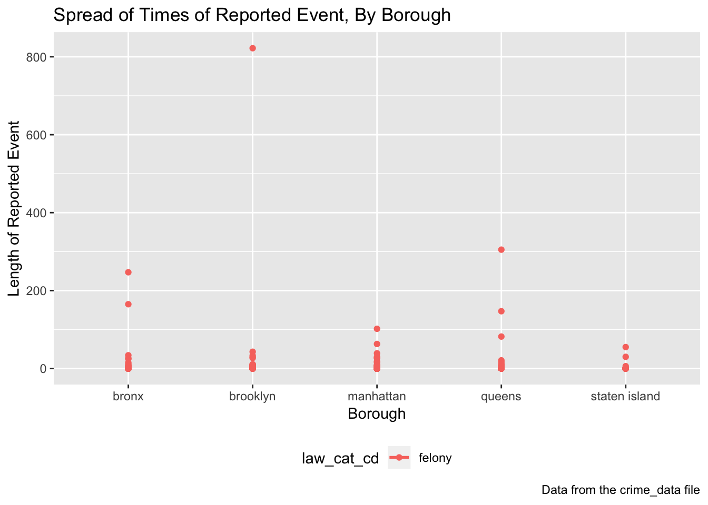

As one of our exploratory analyses, we thought it would be interesting to examine whether the length of time of the reported event or crime differs by borough. Examining the length of the reported event or crime can serve as a proxy inicatory of the severity of the crime by each borough, assuming that longer crimes tend to be more severe and less resolved.
First, we load the required R packages. Next, we read in the CSV file and tidy it up. For this exploratory analysis, we chose to limit the data by randomly sampling 1,000 observations from the data frame.
We can look at the data in a table to examine general trends and get a feel of my data.
We can also look at whether the length of time for the reported event/crime differs by borough visually. 
From the graph above, we can see a couple of things. First, there are, numerically speaking, fewer reported events in Staten Island. Secondly, the spread of the reported events seems to be slightly larger in the Bronx than in other boroughs. Lastly, although the spread among Brooklyn, Manhattan, and Queens is approximately the same, Queens has more outliers.
You can find the code for this exploratory analysis here.
For our second exploratory analysis, we chose to examine offense rates by borough. Doing so gives us an understanding as to what NYPD can prioritize their efforts to when stemming crime.
First, we load the required R packages and read in the dataset. We also load information from the U.S. Census on total population in the individual NYC boroughs to calculate offense rates in each borough.
Include Yaa’s
Reading in the datasets